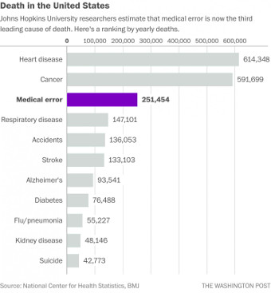

В начале
Изначально меня интересовал вопрос, как так получилось, что люди быстро расселились по Земле после Потопа, и не только люди, но и животные и растения.
Поэтому стал искать ответ в Торе (ТаНаХ/Ветхий Завет), и выделил два «бутылочных горлышка» прохождения популяции людей, когда популяция была минимальной.
Адам и Ева
Плодитесь и размножайтесь
Расселение от Адама (ивр. אָדָם человек) и Евы (ивр. חַוָּה Хавва) пра-пра-пра… 27 дедушка и бабушка всех людей.
3246 г. до н.э. начало Всемирного потопа

Ной и его дети
И родил Ноах трёх сынов
Расселение от Ноя (ивр. נֹחַ, Но́ах) и его детей. 10 поколений от Адама и Евы.
«И были сыновья Ноаха, вышедшие из ковчега: Шэйм, Хам и Йэфэт. А Хам – это отец Кнаана.
Эти трое были сыновья Ноаха, и от них населилась вся земля».
Берeйшит, 9:18-19

Поиск решения
Вопрос был задан
Какова численность населения была перед Потопом - неизвестно (от сотворения Адама 5508 г. до н.э. до 3246 г. до н.э.). Известна численность населения после Потопа 7,52 млрд. человек. Могли ли люди за такое короткое время расселиться на Земле?
Осталось найти его решение
Чтобы его найти, нужно было смоделировать рост популяции живых существ. Изначально планировал создать БД, в которую бы записывал всех людей, их детей, возраст и связи между ними.
Родословная первых поколений
«По паре вошли к Ноаху в ковчег, мужского пола и женского»
Но далее это упростил до пары «муж-жена», куда проще считать пары, а не отдельных людей.
Затем, вовсе неважно знать, кто их дети, как только наступает детородный возраст (период), добавляется новая пара.
А когда возраст приближается к максимально допустимому, пара удаляется.
И в итоге важно знать лишь один параметр - возраст.
Граничные условия
Для такого простого случая использовать БД вовсе необязательно, можно обойтись обычным одномерным массивом.
Нужно задать начальные и граничные условия: возраст пар, детородный возраст, возраст окончания деторождения и возраст смерти.
Максимальные значения
Максимальное количество, которое может родить женщина за всю жизнь - 69 детей (Книга рекордов Гиннеса).
Предположительно, Ева родила около 60 детей.
Максимальный возраст людей постепенно уменьшался с 950 лет до современного 70-80 лет (сокращение возраста в 10 раз за 60 поколений). Так же был установлен запрет на близкородственные связи.
« … да не борется дух Мой в человеке вечно, потому что он плоть; пусть будут дни его сто двадцать лет».
Берeйшит, 6:3
var population = {
firstPairs: [], // initial pairs ages
maxAge: , // death
mature: , // start to born
old: , // end to born
waitBeforeChild: * 2, // wait years before new pair to born
maxYear: , // limit time usage
maxPeople: , // try to calculate year for this population
maxPeopleLimit: , // limit memory usage
accidentFactor: , // accident in %
pairs: null,
twice: null,
twiceYear: null,
twiceYears: null,
twiceAverage: null,
lastBorn: null,
lastDied: null,
year: null,
peopleInMaxYear: null,
yearForMaxPeople: null,
init: function () {
this.pairs = this.firstPairs;
this.year = 1;
this.twice = this.pairs.length * 2;
this.twiceYears = [];
this.twiceYear = 0;
this.twiceAverage = null;
this.peopleInMaxYear = null;
this.yearForMaxPeople = null;
},
recount: function () {
this.init();
while (this.year < this.maxYear
&& this.pairs.length * 2 < this.maxPeopleLimit) {
var newPairs = [];
this.lastBorn = 0;
this.lastDied = 0;
// Count who born & died
for (var i = 0; i < this.pairs.length; i++) {
var age = this.pairs[i];
if (age > this.mature
&& age < this.old
&& age % this.waitBeforeChild == 0) {
newPairs.push(0);
this.lastBorn++;
}
if (age < this.maxAge
&& Math.random() > this.accidentFactor / 100) {
newPairs.push(++age);
} else {
this.lastDied++;
}
}
this.pairs = newPairs;
// Save year of twice
if (this.pairs.length >= this.twice) {
this.twice *= 2;
this.twiceYears.push(this.year - this.twiceYear); // how many years past before twice
this.twiceYear = this.year;
}
this.year++;
}
// Count average if values more than N
if (this.twiceYears.length > 10) {
var twicedYears = 0;
var twicedCount = Math.round(this.twiceYears.length / 2); // second half to count only
for (var i = this.twiceYears.length - twicedCount; i < this.twiceYears.length; i++) {
twicedYears += this.twiceYears[i];
}
this.twiceAverage = twicedYears / twicedCount;
this.peopleInMaxYear = Math.round((this.pairs.length * 2) * Math.pow(2, (this.maxYear - this.year) / this.twiceAverage));
this.yearForMaxPeople = Math.round(this.year + (Math.log(this.maxPeople / (this.pairs.length * 2)) / Math.log(2)) * this.twiceAverage);
}
}
};
И наполнилась земля злодеянием
Экспериментируя, нашёл, что время удвоения спустя несколько поколений стабилизируется.
И его тоже можно использовать как параметр - за какой период времени популяция удваивается.
Кроме того, ввёл ещё один параметр, гибель от несчастного случая. Так ребёнок или взрослый может умереть от болезни, войн или собственной неосторожности.
В своей модели пара с 1% вероятности в год может быть удалена при любом возрасте.
Рассчитать
Ты будешь жалить его в пяту
Гибель от несчастного случая по миру сложно определить, но более 0.6%
Смертей из-за инфекционных заболеваний
13,0 млн.
Смертей, вызванных раком
8,3 млн.
Смертей детей до 5ти лет
7,6 млн.
Смертей, вызванных курением
5,0 млн.
Смертей, вызванных употреблением алкоголя
2,5 млн.
Смертей, вызванных ВИЧ
1,7 млн.
Жертв ДТП
1,4 млн.
Самоубийств
1,1 млн.
Смертей вызванных малярией
1,0 млн.
Смертей матерей при родах
0,3 млн.
«А жене сказал: умножая умножу муку твою в беременности твоей; в муках будешь рожать детей, и к мужу твоему влечение твое, и он будет господствовать над тобою».
Берейшит, 3:16
Выводы, которые показывает модель